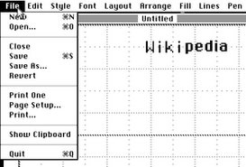
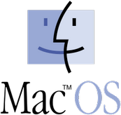
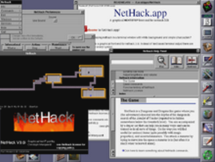

Mac OS / Mac OS X
O Mac OS Classic é um sistema operacional baseado em gráficos desenvolvido pela Apple para alimentar seus computadores pessoais Macintosh de 1984 a 2001 . É o primeiro sistema convencional com uma interface gráfica do usuário , inspirada na Xerox Alto e baseada no modelo WIMP (ou seja, com janelas , ícones , menus e mouses ).
 MacDraw em execução no Mac OS "Classic" |
Família: Seu Genero
Línguas: Multilínguas
Tipo de Núcleo: Monolítico para 68k, nano-core para PowerPC
Status do projeto acabado
Plataformas: Motorola 68k (1.0 - 8.1) PowerPC (7.1.2 - 9.2.2)
Empresa/Desenvolvedor: Apple
Licença Software: Proprietário
Estados da Fonte: Fonte fechada
Primeira Versão:
Última Versão Estável: 9.2.2 ( )
Web Site: Apple Inc. (US)
História
A partir de 1996, o Mac OS 7.6 originalmente lançado em 1984 no sistema operacional Macintosh foi publicado pela primeira vez sob este nome. O 1984 com o Macintosh 128k publicado pela primeira vez "System 1.0" teve o mais rico por alguns recursos modernos sistema operacional Lisa OS , que tinha sido desenvolvido para o computador anterior, mas economicamente mal sucedido Apple Lisa .
A linha Mac OS foi lançada em computadores Macintosh e Mac e laptops em
1984-2002, distribuídos como uma atualização gratuita e parcialmente
vendidos separadamente. Em 1984, era simplesmente chamado de sistema e era de 1987 em sua totalidade, também conhecido como Macintosh System Software.
No início dos anos 90, foi depois do System 6, com o único sistema parcialmente modernizável 7 cada vez mais tecnicamente desatualizado, e a Apple tentou escrever um sistema operacional completamente novo, mas compatível.
No entanto, quando isso não foi concluído em 1996, o "sistema" clássico
foi renomeado para "Mac OS" e aprimorado com as tecnologias do projeto Copland inacabado, enquanto trabalhava simultaneamente no sistema operacional OPENSTEP adquirido. Desde 1999, também é conhecido como Mac OS Classic - "Mac OS clássico" - para diferenciá-lo claramente do sucessor desenvolvido de forma independente, o Mac OS X.
No final de 1996, a Apple decidiu comprar o Steve Jobs, fundado por Steve Jobs , juntamente com o sistema operacional OPENSTEP Unix , que entrou em operação em janeiro de 1997. Na Apple, o novo sistema operacional foi desenvolvido até 1998 sob o nome de Rhapsody
e deve, por um lado, substituir completamente o Mac OS clássico, bem
como ser executado em computadores que não são da Apple, como PCs
compatíveis com IBM. O Rhapsody aproveitou a nova interface de programação da OPENSTEP chamada "Yellow Box" (renomeada como OpenStep ) para fornecer recursos avançados de sistema operacional, como proteção de memória e multitarefa preemptiva. Programas clássicos do Macintosh foram executados no recém-desenvolvido Blue Box , mas não puderam fazer uso dos recursos modernos.
Transição suave
Na WWDC de 1998, foi anunciada a fusão do clássico Mac OS (então Mac OS 8.1) e Rhapsody com o Mac OS X (pronuncia-se "Mac OS dez", ou seja, Mac OS Ten ).
A estratégia previa disponibilidade exclusiva para computadores Apple e
incluía o desenvolvimento do Mac OS 8 (de 1999 também Mac OS 9) e a
integração da interface de programação Macintosh, tanto quanto possível,
no moderno sistema operacional Mac OS X. Isso se chamava carbono e, com 6.000 das aproximadamente 8.000 funções, cobriu a maior parte da interface existente. Isso permitiu que a plataforma Macintosh fornecesse aos desenvolvedores de aplicativos de terceiros essenciais seus produtos para o Mac OS clássico e o próximo Mac OS X, já que a sobrecarga de portabilidade de
peças de programa existentes em carbono era muito menor do que na nova
interface de programação. " Caixa Amarela ", que foi renomeada para Mac
OS X em Cocoa .
O Carbon, por outro lado, foi "backported" na forma do CarbonLib no Mac
OS a partir da versão 8.1 - isso permitiu que "aplicativos
carbonizados" ( aplicativos carbonizados em inglês ) executassem o mesmo programa nativo no Mac OS Classic e no Mac OS X.
O Mac OS X deveria ter aparecido após os planos originais em 1999, mas
só apareceu em 2001. O Mac OS 9, o último Mac OS clássico, não foi mais
desenvolvido a partir de então. Para tornar a transição para o novo sistema operacional o mais suave possível, o Blue Box, agora renomeado para o ambiente Classic , também foi aprimorado para que os programas clássicos sejam exibidos como janelas diretamente na interface Aqua introduzida no Mac OS X.
Assim, o Mac OS X reuniu "o melhor dos dois mundos" - com o Carbon, era possível que programas aplicativos como o Adobe Photoshop e o Microsoft Office estivessem relativamente rapidamente disponíveis no Mac OS X. Até mesmo a própria Apple assumiu partes do Finder , iTunes e QuickTime inicialmente do Mac OS clássico.
Para convencer os desenvolvedores externos, o Finder foi ainda
expandido com ideias do NeXTStep / OPENSTEP Workspace Manager em Carbon. No entanto, o Cocoa era a interface de programação preferida sob o novo sistema operacional, que a Apple apontou repetidamente.
Gradualmente, a maioria dos programas foram transferidos de Carbono
para Cacau, incluindo o Mac OS X Snow Leopard Finder (2009) e o Adobe Creative Suite versão 5 (2010).
A partir de 2005, o iOS rodando em iPod , iPhone e iPad também foi desenvolvido a partir do Mac OS X. Também sendo executado no sistema operacional da Apple TV , o tvOS vem do Mac OS X, além de estar em execução desde 2014 nos watchOS da Apple Watch .
Depois de 2007 e após a mudança do PowerPC para a arquitetura do processador Intel x86
, o suporte oficial para o Mac OS clássico desapareceu, porque além do carbono existente no Mac OS X não é mais um
componente do Mac clássico OS está conectado diretamente.
Além disso, o carbono também foi descontinuado desde 2007, não foi
portado para 64 bits e, conseqüentemente, os aplicativos de carbono são
limitados a 32 bits. Além disso, a interface de programação Carbon está faltando nas variantes derivadas iOS, tvOS e watchOS.
Visto sob esta luz, a renomeação de "Mac OS X" em "OS X" 2011, em "macOS" 2016 marca o fim visível da fase de transição.
Com Cocoa macOS, iOS, tvOS e watchOS estão enraizados na interface de
programação OpenStep desenvolvida com o NeXTStep e, junto com novos
desenvolvimentos como o Swift, essas interfaces e estruturas modernas
permitem a programação em todas as plataformas atuais da Apple.
Marca "Mac OS"
Mac OS é uma marca registrada que identifica sistemas operacionais baseados em GUI da Apple Inc. (anteriormente Apple Computer Inc.) para seus sistemas de computadores Macintosh.
O System 7.5.1
(1995) foi a primeira versão com o famoso logotipo do Mac OS, que
substituiu o Macintosh "Picasso" a partir de então e como ele é exibido
na inicialização . O ícone também substitui o do Finder no Mac OS X. O nome "Mac OS" foi usado pela primeira vez com a versão 7.6
(1997) para o próprio sistema operacional - isso foi a partir de então
para todas as versões clássicas do Mac OS escritas abaixo do ícone na tela inicial . No Mac OS X 10.0 (2001), por outro lado, o familiar ícone do Happy-Mac foi usado novamente na inicialização. A partir do Mac OS X 10.2 (2002), um logotipo cinza da Apple é exibido.
Sistemas operacionais chamados "Mac OS":
- Mac OS 7.6 : Atualização para o System 7.5, recursos retirados do projeto Copland ; requer pelo menos um processador Motorola 68030 (suporte para modelos Macintosh mais antigos com processador 68000 - e 68020 omitido pela primeira vez)
- Mac OS 8 : mais recursos do projeto Copland incluídos, incluindo: a. o design Platinum
- Mac OS 8.1 : versão mais recente para computadores Macintosh com processadores m68k ; Sistema de arquivos HFS + introduzido e enviado com o Internet Explorer 3 ou 4
- Mac OS 8.5 : otimizado para PowerPC , Sherlock como pesquisa no desktop
- Mac OS 8.6 : Nanocornador aprimorado para suporte a multiprocessadores e multitarefa preventiva limitada para aplicativos
- Mac OS X Server 1.0 a 1.2v3 : sistema operacional de servidor PowerPC baseado em Rhapsody com design de desktop e platina para Mac OS 8 , primeiro lançamento de Darwin
- Mac OS 9 : Integração de muitos recursos já no desenvolvimento do Mac OS X (multiusuário, chaveiro, iTools)
- Mac OS X Public Beta : Versão beta do sucessor do Mac OS 8 e 9, com a recém-desenvolvida interface Aqua
- Mac OS 9.1 : melhor integração com o ambiente clássico do Mac OS X
- Mac OS X 10.0 (e a variante de servidor Mac OS X Server 10.0 ): versão final do primeiro Mac OS X com interface Aqua e Darwin , o sistema operacional Unix baseado em BSD , como uma subestrutura composta de NeXTSTEP ou OPENSTEP (com OpenStep ) e o projeto Rhapsody.
- Mac OS 9.2.2 : versão mais recente do sistema operacional agora conhecido como "Mac OS Classic", que foi desenvolvido pelo "System"
- Mac OS X 10.1 , 10.2 , Panther (10.3) e Tiger (10.4) (assim como a respectiva variante de servidor): Desenvolvimento adicional do sistema operacional Darwin e da interface Aqua
- Mac OS X Tiger 10.4.4 / Intel : Versão para Macs com processador Intel ( IA-32 , código-fonte compatível com a versão PowerPC , Rosetta para aplicativos PowerPC)
- Mac OS X Server 10.4.7 (Tiger): primeira versão universal do Mac OS X.
- Mac OS X Leopard (10.5) (bem como a versão do servidor Mac OS X Server 10.5 ): versão mais recente para Macs com processador PowerPC (e, portanto, também a última versão Universal ), não mais ambiente Classic ; Primeiro certificado para Single UNIX Specification UNIX 03
- Mac OS X Snow Leopard (10.6) (e versão do servidor Mac OS X Server 10.6 ): otimizado para processadores Intel ( IA-32 ) e versão mais recente com Rosetta para aplicativos PowerPC, primeiro com a versão 10.6.6 ou posterior da Mac App Store
- Mac OS X Lion (10.7) : redesenhado e primeiro distribuído através da Mac App Store ; última versão que carrega "Mac OS" no nome
Com o Mac OS X Lion (versão 10.7 do Mac OS X), o sistema operacional já
era anunciado como "OS X" e a versão do servidor já é chamada OS X Server 1.0 (sem "Mac" no nome). A partir do OS X Mountain Lion (versão 10.8), o sistema operacional é chamado oficialmente de "OS X" e indica isso clicando em "Sobre este Mac". Como uma razão para remover "Mac" no nome das variantes do sistema operacional para Apple TV , iPod , iPhone e iPad aplicam-se além da versão original para computadores Macintosh. Como o sistema operacional não está mais sendo executado apenas em Macs, ele não deve mais ser chamado de "Mac OS".
A Apple TV da 1ª geração foi uma versão ligeiramente modificada do Mac
OS X (Tiger, versão 10.4) é usada para iPod, iPhone e iPad, e da Apple
TV 2ª Geração é o sistema operacional iOS (originalmente iPhoneOS e iPadOS) ou tvOS (baseado no iOS) e tem a mesma base eo mesmo kernel do
Mac OS X. 2016 Finalmente, o nome foi renomeado para macOS análogo aos
outros sistemas operacionais, então o Mac OS X original agora é chamado
macOS, então novamente com "mac" no nome, mas escrito de forma
diferente, e pela primeira vez sem o X, que oficialmente representava a
versão 10 como um numeral romano e, assim, distinguia claramente o
moderno sistema operacional desenvolvido a partir do Rhapsody do Mac OS
clássico.
Pré-história
A Apple havia oferecido ao longo do tempo alguns sistemas operacionais para os computadores internos da Apple. O primeiro computador da Apple , o Apple I , tinha seu sistema operacional firmemente ancorado no firmware. Com o Apple II veio de 1977 predominantemente sistemas operacionais baseados em texto, como o Apple DOS , bem como no comercialmente malsucedido Apple III de 1980, o seu desenvolvimento Apple SOS usado. Inspirado por ele apareceu para o Apple II ProDOS , mas também Apple CP / M correu no Apple II Com a Apple Lisa a Apple ousou a primeira tentativa comercial de um fabricante de computadores para comercializar um computador pessoal (PC) com sistema operacional puramente gráfico - os da Xerox Sistemas com operações gráficas já oferecidos na década de 1970 não eram PCs, mas sim sistemas comerciais caros. A Apple Lisa, no entanto, era muito cara para particulares e um fracasso comercial, mas o sistema operacional Lisa OS era o modelo para o Apple Macintosh de 1984, que deveria substituir o Apple II. No entanto, demorou vários anos para o bem-sucedido Apple IIgs com o disponível a partir de 1987 também gráfico GS / OS do Macintosh como um modelo de computador Apple mais bem sucedido poderia ser substituído.
Sistemas operacionais Unix também estavam disponíveis para computadores Apple. A Microsoft começou com o Xenix para a Apple Lisa. Em 1988, a Apple lançou o A / UX , um Unix System V , que rodava na superfície do software do sistema Macintosh ( System 6 e System 7 ) e, portanto, não representa um sistema operacional independente.
 Logotipo do localizador e inscrições do Mac OS clássico (de 7.5.1 / 7.6). |
Logotipo de inicialização desde o Mac OS X 10.2. |
Software de Sistema Macintosh (1984-1996)
Durante anos, a Apple deliberadamente minimizou a existência do sistema operacional para tornar os sistemas Macintosh mais fáceis de usar e se diferenciar de outros computadores pessoais e de seus sistemas operacionais. Uma parte essencial deste software de sistema inicial, ou seja, o Kit de construção para Macintosh ( English Macintosh Toolbox ), foi armazenado diretamente na ROM . Este procedimento teve a vantagem em tempos de RAM cara que nem todos os componentes tinham que ser carregados na memória principal ativa e estavam imediatamente disponíveis, já que os programas na ROM eram sempre e mais rápidos do que os disquetes e discos rígidos habituais disponíveis. Também foi assim que a capacidade de armazenamento limitada de disquetes ( disquetes ingleses ) não ocupados por partes do sistema operacional e poderia ser usado apenas para programas e dados. Os primeiros computadores Macintosh foram enviados sem um disco rígido.
No entanto, foi necessário que um disquete do sistema fosse iniciado. (Somente o Macintosh Classic de 1991 foi capaz de inicializar completamente a partir da ROM). A arquitetura do "System Software" permitia um sistema operacional completamente gráfico sem um modo de linha de comando . Programas de travamento e até mesmo falhas de hardware, como a falta de unidades, eram comunicadas ao usuário graficamente por meio de combinações de ícones , janelas de dica, botões, o ponteiro do mouse e a fonte distintiva do bitmap de Chicago .
Um subproduto provavelmente não intencional foi o fato de o sistema operacional estar firmemente fundido com o hardware. O "software do sistema" dependia desse sistema central na ROM da placa - mãe . Mais tarde, essa circunstância ajudou a garantir que ela só pudesse ser executada por computadores da Apple ou clones licenciados (com as ROMs protegidas por direitos autorais da Apple). Atualizações para o sistema operacional foram distribuídas pelos revendedores da Apple para o System 6 em disquetes a preço de custo.
O primeiro sistema operacional Macintosh consistia em duas partes: o "System" e o " Finder ", cada um com seu próprio número de versão e programado em assembler e Pascal .
O "sistema" clássico é principalmente devido à ausência de uma linha de comando - então a interface do usuário é completamente gráfica. Famosa por sua boa usabilidade e multitarefa cooperativa, no entanto, tem sido criticada por sua falta de suporte a memória ( memória ) e sua suscetibilidade a conflitos entre extensões de sistema operacional (como drivers de dispositivo ). Portanto, algumas extensões não funcionaram juntas ou apenas quando carregadas em uma ordem específica.
O Macintosh era originalmente o sistema de arquivos do Macintosh (MFS) usado, que não permite subpastas e, portanto, também é conhecido como um sistema de arquivos simples. Foi introduzido em 1984 e substituído em 1985 pelo Hierarchical File System (HFS), um sistema de arquivos hierárquico (como o nome diz) com uma árvore de diretórios real. Embora ambos os sistemas de arquivos sejam compatíveis, os novos recursos do HFS têm problemas para se comunicar com outros sistemas de arquivos que não são do Macintosh.
Com o aumento da capacidade de armazenamento e desempenho, em algum momento não era mais possível manter ou atualizar um sistema operacional gráfico moderno em grandes partes da ROM. Desde os primeiros sistemas PowerPC G3, quase todo o sistema operacional foi, portanto, armazenado no disco rígido. Na ROM física da placa principal permaneceu apenas uma parte necessária por razões de licenciamento, sem o qual o Mac OS ainda não funcionava. O conteúdo da ROM é fornecido pelo System 7 e pelo Mac OS. a. usado para descobrir em qual modelo Macintosh está sendo executado. Enquanto as atualizações para o System 6 eram gratuitas, o System 7 e versões posteriores eram parcialmente distribuídas como produtos pagos e separados. Esses novos computadores Macintosh foram chamados pela Apple de "Novo Mundo" , enquanto a geração mais antiga, na qual partes essenciais do sistema eram armazenadas na ROM, era chamada de "Velho Mundo" (traduzido: "Velho Mundo") foram designados. Além disso, logo depois foi mudado para firmware aberto e introduzido com o iMac (1998) pela primeira vez o nome não oficial anteriormente "Mac" como o nome oficial do produto.
Projetos do Sistema Operacional
O sistema operacional dos computadores Macintosh, que até então era chamado simplesmente de "sistema", como vem evoluindo constantemente desde 1984, apresentava algumas falhas conceituais que só poderiam ser sanadas por um novo desenvolvimento. O sistema não suportava multitarefa preemptiva , operação multiusuário , proteção de memória ou gerenciamento de memória dinâmica e, portanto, era considerado instável e tecnicamente obsoleto. A Apple, portanto, lançou vários projetos ao longo do tempo para desenvolver um novo sistema operacional que atendesse a essas deficiências e deficiências.
Projeto Pink (1988-1995)
Em 1988, o projeto "Pink" foi abordado. O objetivo de Pink era um sistema operacional completamente orientado a objetos . Em meados de 1991, a Apple conseguiu convencer a empresa IBM de seu desenvolvimento anterior, razão pela qual a subsidiária conjunta Taligent foi fundada para completar Pink como TalOS. Logo, porém, ficou claro que o mercado da Apple não precisava de um novo sistema operacional, e é por isso que o Pink ou o TalOS foram convertidos no ambiente de tempo de execução do TalAE, o Taligent Application Environment, mais tarde chamado de CommonPoint . Em 1995, a Apple saiu completamente do desenvolvimento e entregou a Taligent (TalAE) completamente para a IBM. Assim, o problema de um sistema operacional desatualizado com computadores Macintosh persistiu.
Projeto Star Trek (1992-1993)
Já em 1985, depois que Steve Jobs deixou a Apple após uma disputa com John Sculley , surgiu a ideia de um projeto que portasse o sistema operacional da Apple em hardware x86. Mas foi só em 1992 que o projeto, codinome " Star Trek ", foi retomado depois que a Novell se aproximou da Apple para desenvolver um sistema operacional competitivo para o sistema operacional Windows, então comercialmente bem sucedido, do Windows 3.0.
A Novell foi a principal desenvolvedora de sistemas de rede e software com o Netware e foi ameaçada pelo sucesso do Windows . Já em 1991, a Novell havia adquirido o DR DOS, o sistema operacional Digital Research , incluindo a interface gráfica GEM e queria desenvolvê-lo em um sistema operacional gráfico moderno, com o GEM como uma alternativa ao Windows e com o cliente Netware DR DOS (posterior Novell DOS). Mas, sob a Digital Research, o GEM já foi a causa de um processo da Apple, já que parecia muito similar ao sistema operacional Macintosh. Para evitar a repetição de tal processo, a Apple foi contatada para portar seu sistema operacional para a arquitetura Intel x86 . John Sculley, CEO da Apple em 1991, concordou. A Intel também estava interessada em contribuir com 486 PCs para a equipe de desenvolvimento.
A partir do verão de 1992, o System 18 foi transferido para x86 por apenas 18 desenvolvedores e, no final de outubro, um protótipo totalmente funcional estava disponível. A Apple ficou surpresa ao ver seu próprio sistema operacional rodando em um PC compatível com IBM . Como grande parte dele foi escrita em assembler (para o Motorola 68000 usado em computadores Macintosh), quase todo o sistema operacional teve que ser reprogramado. Apenas o Finder e muitas partes escritas em Pascal poderiam ser reutilizadas com apenas algumas mudanças. O resultado era compatível com código-fonte x86: programas escritos para o Macintosh (e seu sistema operacional "sistema" na arquitetura m68k) teriam sido recompilados em x86 - mas a programação de baixo nível teria que ser completamente reescrita.
Na Apple, por um lado, surgiu a situação de que alguém queria vender hardware e acabara de formar uma aliança com a IBM e a Motorola para o desenvolvimento do PowerPC . Desde um sistema operacional x86 teria sido a concorrência de sua própria casa. Por outro lado, os fabricantes de PCs não estavam dispostos a pagar um bom preço pelo sistema operacional se tivessem sido vendidos pré-instalados em um novo PC. A Microsoft tinha um contrato com os fabricantes de PCs, no qual, com cada PC vendido, uma certa quantia deveria ser paga à Microsoft - não importando qual sistema operacional estivesse pré-instalado. Mas os desenvolvedores de software também foram cautelosos, pois não sabiam quanto esforço de portabilidade teria para fazer seus programas se encaixarem no conjunto de instruções x86. Em muitos programas, funções para aceleração de hardware foram escritas em 68k assembler.
Além disso, houve uma mudança em 1993 no comando da Apple e Michael Spindler foi o novo CEO. Sob ele, um programa de economia foi realizado e, embora após o protótipo do executável de "Star Trek", a equipe foi aumentada para 50 programadores, o projeto inteiro finalmente foi definido em junho de 1993.
Projeto Raptor (1993-1994)
Em março de 1988, executivos e desenvolvedores da Apple se reuniram para discutir o sucessor do System 6 . Todas as ideias para os próximos sistemas operacionais foram escritas em cartões de índice : em cartões de índice azuis, idéias que poderiam ser realizadas com o sistema operacional existente como um desenvolvimento adicional. Isso se tornou o "Projeto Azul" em 1991, o System 7 . Idéias foram escritas em cartões de índice rosa para um novo sistema operacional da próxima geração que precisava ser reescrito. Isso se tornou "Projeto Rosa" mais tarde, TalAE, mas que não continha um kernel estável. Em fichas de índice vermelhas, todas as ideias foram escritas, mas foram consideradas realistas para a próxima geração, no mínimo. Essas idéias foram retomadas após o final de "Star Trek" no projeto "Raptor" - o atual "Projeto Vermelho".
No entanto, "Raptor" já estava parado depois de um ano porque a Apple não tinha recursos financeiros e humanos.
Projeto Copland (1994-1997)
Copland era o nome do projeto para um sistema operacional completamente redesenhado da empresa Apple , que deveria suceder ao System 7 ; em vez disso, o último foi mais desenvolvido no Mac OS 8 . O epônimo do projeto foi o compositor contemporâneo Aaron Copland . A Apple planejou equipar os primeiros computadores Macintosh baseados em PowerPC com o sistema operacional Copland em 1994. O objetivo era um sistema baseado em um microkernel (geralmente chamado de nanonúcleo pela Apple) que finalmente dominava a multitarefa preventiva e a proteção da memória . Todo o sistema deve ser capaz de multi-usuário e funcionar de forma diferente do que o System 7 originalmente no processador PowerPC.
Copland foi lançado em março de 1994. Primeiro, uma data de lançamento foi planejada no final de 1995, que foi posteriormente transferida para meados de 1996 e final de 1997. Em novembro de 1995, uma versão beta foi lançada para desenvolvedores de software. O desenvolvimento da Copland, no qual cerca de 500 desenvolvedores trabalharam e custaram um total de mais de US $ 250 milhões [7] , mas neste momento não estava pronto e irremediavelmente em default. A Apple teve que consolar os usuários de Macintosh e os desenvolvedores com o antigo System 7. Ao mesmo tempo, a Microsoft comemorou grande sucesso com o Windows 95 , e as primeiras distribuições sérias de Linux apareceram no mercado. Inspirada pela fusão entre o MS-DOS eo Windows 3.11 da Microsoft no Windows 95, que levou menos de um ano de desenvolvimento, a Apple decidiu, em 1997, interromper a Copland e adicionar tantos recursos quanto possível a um System 7 reprojetado. integrar. As primeiras inovações do projeto Copland já fluíam para a versão 7.6 do Mac OS. Muitos outros foram integrados ao Mac OS 8.0.
MkLinux (1996-1999)
O Instituto de Pesquisa da Open Software Foundation (OSF) criou um microkernel Mach 3.0 baseado em Linux para a arquitetura Intel 486. Como a Apple ainda não tinha um sistema operacional moderno, a empresa patrocinou o desenvolvimento e portou o MkLinux também na plataforma Power Macintosh. Em maio de 1996, a Apple lançou o "MkLinux Developer Release 1" para o Power Macintosh. Somente em 1999, a Apple se retirou do desenvolvimento do MkLinux.
No desenvolvimento do Rhapsody e, finalmente, do Mac OS X (consulte "Developing Mac OS X" ), o kernel Mach 2.5 existente da OPENSTEP também foi atualizado para Mach 3 - e aprimorado com partes do Mach 3 do MkLinux. Então o MkLinux não foi um trabalho insignificante para a modernização do OPENSTEP e, portanto, o surgimento do Mac OS X.
Projeto Gershwin (1997)
Depois que o Copland foi definido, o projeto do sistema operacional "Gershwin" foi iniciado na Apple. Foi para corrigir o que havia de errado com Copland como parte de um novo desenvolvimento. No entanto, Gershwin não era nada além de um nome de projeto e uma ideia porque não havia desenvolvimento real.
Na retrospectiva, no entanto, o Copland pode ser considerado como a idéia do Mac OS 8 e do Gershwin como a idéia do Mac OS 9, já que algumas das funções pretendidas foram encontradas nos sistemas operacionais reais com esses termos.
Macintosh Clones (1994-1996)
Em dezembro de 1994, o então CEO Michael Spindler abriu um mercado para clones de Macintosh autorizados. O acordo previa que outros fabricantes pudessem vender computadores compatíveis com Macintosh executando o System 7. A esperança era que vendendo " clones de Mac " mais baratos, as vendas globais continuariam a aumentar. Por contrato, a Apple ganhou com cada clone vendido de 50 dólares. No entanto, o projeto de lei não funcionou porque, por um lado, em 1995, o sistema operacional Windows 95 , agora competitivo, entrou no mercado - e a Apple, com o System 7, não ofereceu mais a interface gráfica fácil de usar - e, por outro lado, os clones em seu próprio mercado. , Enquanto 4,5 milhões de Macs foram vendidos em 1995, eles eram apenas 4 milhões em 1996 e apenas 2,8 milhões em 1997.
Em janeiro de 1997, a NeXT foi adquirida pela Apple e Steve Jobs foi nomeado CEO interino. Uma de suas primeiras atividades foi terminar o programa clone. Como a Apple controlava o sistema operacional, ela foi renomeada para Mac OS 7.6 a partir da versão 7.6 e foi feita uma tentativa de limitar os clones ao segmento de baixo preço abaixo de US $ 1.000 e aumentar o custo de licença por PC vendido. Quando os fabricantes de clones do Macintosh não aceitaram os novos termos, o Mac OS 7.7 proposto foi lançado sem cerimônia como Mac OS 8.0 . Isso terminou abruptamente o mercado de clones Macintosh, como o contrato especificamente licenciado "System 7" (incluindo o Mac OS na versão 7, incluindo o Mac OS 7.6).
Mac OS (1997-2001)
A razão pela qual o sucessor do System 7.5.5 foi renomeado para " Mac OS 7.6 " são os clones do Macintosh e a estratégia revisada da Apple que surgiram no final de 1996: os usuários deveriam aproximar o sistema da Apple do que antes - mesmo se eles usaram um clone de outro fabricante. O contrato com os fabricantes de clones Macintosh também é a razão pela qual o Mac OS 8.0 chegou tão cedo no mercado. Na verdade, o Mac OS é outra versão do "System", "System Software" ou "Macintosh System Software" - mas da versão 7.6 com desenvolvimentos do nunca acabado sistema operacional Copland , que foram integrados após o seu final no "sistema" existente.
Como a Apple já estava trabalhando no sistema operacional sucessor, a transferência da tecnologia Copland nas versões 8.0 a 9.2.2 foi continuada de forma consistente. Estes e a portabilidade de novos desenvolvimentos (como o CarbonLib e a melhor integração com o ambiente Classic) pavimentam o caminho para a próxima encarnação do sistema operacional da Apple, que também deve ser chamada de "Mac OS": Mac OS X.
Compra de um sistema operacional sucessor
As vendas da Apple continuaram a cair até o final de 1996. Os especialistas da indústria estavam certos de que a Apple tinha pouco tempo, porque o System 7 estava irremediavelmente desatualizado e o PC com o Windows 95 era tecnicamente superior e comercialmente bem-sucedido.
Depois que a Apple falhou em substituir seu sistema operacional desatualizado por um novo desenvolvimento, a administração estava procurando, de forma febril, uma alternativa moderna que eles queriam licenciar ou comprar. Assim, além do BeOS , que logo se tornaria um favorito, também estava pensando no Windows NT 4.0 . Até mesmo o renascimento do TalOS ( Project Pink ) foi considerado. Em paralelo, os programadores tiveram a tarefa de transferir o maior número possível de recursos do sistema operacional com falha para o Copland no Mac OS.
BeOS
Na verdade, a Be Incorporated era fabricante de hardware e vendeu o sistema operacional junto com computadores pessoais de arquitetura PowerPC chamados BeBox . Mas o valor real da empresa não eram os BeBoxes, mas o sistema operacional: o BeOS já funcionava nos Power Macs da Apple e oferecia tudo o que a Apple queria com o Copland; Foi tecnicamente atualizado e já totalmente funcional.
Quando a Apple entrou em negociações com a Be Inc. sobre a compra do BeOS, Jean-Louis Gassée , então CEO da Be, estava muito certo de que a Apple - economicamente em pé com as costas contra a parede - não teria outra opção além do BeOS. comprar. Ele levou o preço para cima porque ele tinha algo que a Apple precisava desesperadamente.
Para a Apple, no entanto, o BeOS não estava completo; se apenas porque não havia compatibilidade com aplicativos Macintosh existentes. Um resultado dos esforços para alcançar essa compatibilidade é o SheepShaver : um ambiente de virtualização ou um emulador PowerPC para o BeOS, que tornou possível virtualizar o sistema clássico a partir do 7.5.2 no BeOS ou emular arquiteturas não PowerPC e as existentes Aplicativos, portanto, continuam a usar.
Por fim, você não poderia concordar com o preço do BeOS. A Apple procurou novas opções e as encontrou no co-fundador da Apple, Steve Jobs, e em sua nova empresa, a NeXT . A Be Inc. faliu e acabou sendo dissolvida, e sua propriedade intelectual foi transferida para a Palm Inc., que entretanto foi comprada e desfeita.
OPENSTEP
A NeXT , empresa de computadores e softwares fundada por Steve Jobs , tinha um sistema operacional moderno e inicialmente vendeu-a juntocom hardware, mais tarde como um único produto de software, mas não obteve sucesso no mercado. A Apple, por outro lado, tinha uma base de clientes fiéis, mas nenhum sistema operacional moderno. Depois que Steve Jobs ligou para Gil Amelio e o aconselhou contra o BeOS, as duas empresas concordaram em assumir a NeXT da Apple. Em dezembro de 1996, isso foi anunciado e concluído no início de 1997. O próprio Steve Jobs se tornou consultor de Gil Amelio, logo depois CEO interino da Apple.
Além do novo CEO introduzido em projetos de computador revisados como o iMacs (1998) e o iBooks (1999) foi imediatamente trabalhando em uma transferência do sistema operacional da NeXT, da versão 4 de 1996 na OPENSTEP renomeada NeXTStep original, no sucessor do Mac OS.
| NextStep |
Desenvolvimento do Mac OS X
Sob o nome do projeto " Rhapsody ", o sistema operacional OPENSTEP , que foi chamado de NeXTStep até a versão 3.3 de 1995, foi desenvolvido.
Com a OPENSTEP, a Apple recebeu o há muito aguardado kernel Mach
estável, permitindo-lhe realizar algumas das metas estabelecidas pelo
projeto Copland , baseado no Rhapsody.
Quando o Mac OS 8 foi lançado, o Rhapsody já estava funcionando. O novo sistema operacional baseado em BSD primeiro teve que ser portado para a arquitetura PowerPC do Macintosh. Originalmente, ele deveria manter o visual semelhante ao NeXTStep, mas então surgiu a aparência do Mac OS 8 no design platinum.
A Apple tinha grandes planos com o Rhapsody: em janeiro de 1997, a
Apple anunciou o futuro sistema operacional como o sucessor do Mac OS
7.6 e supôs que os usuários do Mac OS migrariam diretamente para o
Rhapsody. Em maio de 1997, a Apple recorreu aos desenvolvedores: O software programado para o Rhapsody pode ser facilmente compilado para outros sistemas operacionais, se a estrutura subjacente compatível com OPENSTEP " Yellow Box " estiver instalada.
O Yellow Box foi a interface de programação (API) que foi adotada pela OPENSTEP e desenvolvida pela NeXTstep junto com a Sun Microsystems como OpenStep. Com o GNUstep, já havia uma implementação da interface OpenStep para Linux, enquanto a Sun portou o OpenStep para o Solaris.
No entanto, como a Sun desenvolveu sua própria interface de plataforma
cruzada com o Java, o fim do OpenStep no Solaris era previsível.
Como o próprio NeXT já havia portado o OpenStep para o Windows, durante
o desenvolvimento do Rhapsody, o Yellow Box também foi lançado em uma
versão do Windows para desenvolvedores que poderiam assim desenvolver
seus programas igualmente para o Rhapsody e para o Windows.
O Rhapsody, como sistema operacional, deve aparecer tanto para os
computadores baseados em PowerPC da própria Apple quanto para os PCs da
Intel.
Como os aplicativos nativos precisavam ser programados pela primeira
vez, o Rhapsody incluía programas já conhecidos da OPENSTEP, enquanto a
variante PowerPC incluía uma máquina virtual chamada blue box , destinada a um Mac OS 8 virtualizado para aplicativos Macintosh existentes. Na versão Intel estava faltando a caixa azul.
Finalmente, em 1998, essa estratégia de multiplataforma aberta estava prestes a terminar. A Apple teve que aceitar os fatos reais de que o sistema operacional anunciado nesta forma não foi aceito no mercado. Por um lado, a Yellow Box API incluía o Display Postscript do OpenStep, que precisava ser licenciado pela Adobe.
O custo de vários milhares de dólares por licença ficou no caminho de
uma API multi-plataforma econômica, que deveria ser a Yellow Box.
Por outro lado, os fabricantes de softwares escritos para o Macintosh
não estavam prontos para reprogramar completamente seus programas para o
Rhapsody. A mudança da API do Macintosh para a API do Yellow Box foi como uma mudança radical de sistema, para a qual grande parte do código-fonte existente precisaria ser reescrito.
Nessa perspectiva, o Rhapsody era na verdade outro NeXTStep ou
OPENSTEP, que tinha apenas a aparência e a área de trabalho em comum com
o Mac OS.
E em terceiro lugar, não havia mercado real para o sistema operacional
Rhapsody nos PCs, porque, por uma boa razão, quase todos os PCs
recém-vendidos eram fornecidos com um sistema operacional Windows.
Por meio dos contratos da Microsoft, os fornecedores de PC eram
obrigados a pagar os custos de licença para a Microsoft com cada PC
vendido - mesmo se outro sistema operacional, por exemplo. B. Rhapsody, pré-instalado, teria sido vendido.
Embora Rhapsody foi concluída como "Rhapsody 1.0" para as arquiteturas
de processador PowerPC e Intel, a publicação, mas literalmente cancelada
no último momento.
A Apple abriu mão da pressão de fabricantes terceirizados para criar
uma interface de programação de aplicativos compatível com Mac OS para o
próximo sistema operacional. Como consequência, o nome do produto "Rhapsody" e a caixa amarela de outras plataformas foram rejeitados. Steve Jobs anunciou no MacWorld
em 8 de julho de 1998, que o Rhapsody será lançado como Mac OS X Server
1.0 exclusivamente para o Power Macintosh - e como um sistema
operacional de servidor puro.
Como a Apple ainda não podia oferecer um sistema operacional de desktop
moderno e acabado em 1998, todos os desenvolvimentos e tecnologias
existentes foram integrados, tanto quanto possível, ao já existente
sistema operacional Mac OS clássico.
Para unir o tempo até a conclusão do sistema operacional sucessor, o
Mac OS X - "Mac OS versão 10" - foi mais aprimorado no Mac OS clássico,
mas também novos desenvolvimentos incorporados. Então você a.
Para o Mac OS 8.1 ou superior, o CarbonLib foi disponibilizado, a
partir do Mac OS 8.5, o "antigo" sistema operacional com partes do
kernel do Copland melhorado e no Mac OS 9 a banda-chave bem conhecida da
OPENSTEP foi integrada. O Sherlock apresenta o recurso de pesquisa desenvolvido pelo Copland no Mac OS 8.5, posteriormente no Mac OS X 10.2 . (No Mac OS X Tiger , o Spotlight substituiu a função de pesquisa do Sherlock.)
Enquanto isso, o trabalho estava em pleno andamento no Mac OS X.
Mac OS X (2000-2012)
O desenvolvimento do Mac OS X resultou do fracasso do Rhapsody e
começou em 1998. O nome para o novo sistema operacional deixa claro que é
um Mac OS.
Embora o Rhapsody fornecesse à Blue Box
a oportunidade de usar os aplicativos existentes do Mac OS no novo
sistema operacional, eles não se beneficiavam das vantagens do kernel
moderno (proteção de memória, multitarefa preemptiva), já que estão em
um clássico virtualizado Mac OS estavam em execução. Como portar os programas existentes para o Yellow Box
teria exigido muito esforço, a Apple foi forçada a portar a interface
de programação Macintosh para o Mac OS X: isso foi chamado Carbon e não incluiu todas as chamadas API do Macintosh, proteção de memória e multitarefa preemptiva Way ficou de pé.
Carbon teve que modificar aplicativos existentes apenas um pouco para
se beneficiar do moderno kernel do Rhapsody, que foi renomeado para XNU .
O esforço de portabilidade dos aplicativos Macintosh existentes foi,
portanto, limitado e também permitiu que a própria Apple integrasse os
programas existentes no Mac OS X. Assim, o QuickTime e o Finder também estavam em programas do Mac OS X Carbon, enquanto novos desenvolvimentos como o iTunes e o Safari foram escritos no renomeado por Yellow Box na nova API do Cocoa.
Para que os programas adaptados à Carbon API não sejam apenas
executados no Mac OS X, o Carbon também foi transferido para o Mac OS
8.1 na forma do CarbonLib, de modo que a nova interface (que difere em
detalhes da API do Macintosh) também para o Mac clássico Aplicativos de
sistema operacional podem ser usados.
Os aplicativos em execução no Mac OS X e no Mac OS clássico com
CarbonLib são chamados de "aplicativos carbonizados", que se traduzem
aproximadamente como "aplicativos carbonizados". No entanto, o CarbonLib exigia um processador PowerPC, bem como o Mac OS, mesmo a partir da versão 8.5.
Os aplicativos para o processador 68k contam com a API clássica do
Macintosh e continuam sendo executados no Mac OS até a última versão
9.2.2 em uma emulação transparente.
O X em nome do Mac OS X mostrou tanto - como um numeral romano para 10 -
o sucessor do Mac OS 9 e a compatibilidade com ele, como também o novo
caráter unixóide da nova geração do sistema operacional ("Uni x "). O Developer Preview 3 (janeiro de 2000) introduziu o Aqua , uma interface gráfica de usuário reescrita baseada em OPENSTEP. Isso criou uma aparência distinta e independente que continua a moldar o Mac OS X hoje. Neste curso, o caro Display Postscript foi substituído pelo PDF de exibição gratuita.
O kernel do Mac OS X é o XNU , que por um lado alude ao Unix (" X não é U nix "), por outro lado, como "Mac OS X Nu Kernel" pode ser interpretado - porque a Apple realmente tentou com o NuKernel no projeto Copland , até mesmo para desenvolver um microkernel moderno baseado em Mach-3. O XNU era agora um microkernel estável, mas ainda era baseado em Mach 2.5 em OPENSTEP.
Durante o desenvolvimento do Rhapsody, o kernel adotou o conceito
Mach-3, mas não totalmente, tornando o XNU um kernel híbrido baseado no
kernel do FreeBSD . Além disso, o userland foi atualizado do 4.3BSD-Reno no OPENSTEP para o 4.4BSD-Lite no Rhapsody.
Para o Mac OS X, no início do desenvolvimento, já que ele é baseado
diretamente no Rhapsody, a única diferença é que o kernel recebeu o nome
XNU e com Carbon uma API do Macintosh.
Pela primeira vez, a Apple lançou a parte, que é open source, como um projeto separado sob o nome de Darwin .
A esperança era que houvesse desenvolvedores independentes e
freelancers trabalhando na base do sistema operacional, o que acabaria
beneficiando o Mac OS X. Como distribuição, no entanto, apenas algumas das primeiras versões de
Darwin foram lançadas, que ainda tinham que ser instaladas
principalmente no Mac OS, e havia apenas a Apple para o PowerPC. Darwin, no entanto, continua sendo o núcleo do Mac OS X e do iOS baseado nele.
O Blue Box também foi desenvolvido e integrado como um ambiente clássico no Mac OS X.
No entanto, nenhum sistema operacional Mac OS foi adicionado, portanto,
um existente (pré-instalado) precisa ser usado ou um Mac OS 9 adquirido
separadamente deve ser instalado para usar o ambiente Classic.
Em 13 de setembro de 2000, a Apple lançou o beta público do Mac OS X, que agora tem o número de versão 10.0. Isso deve esclarecer a sucessão do Mac OS 9. Em 24 de maio de 2001 finalmente apareceu a versão final como Mac OS X 10.0 , codinome "Cheetah".
No final de 2000, os primeiros Power Macs vinham com o Mac OS 9 pré-instalado e o Mac OS X 10.0 , mas o Mac OS 9 continuava sendo o sistema operacional padrão. A partir de 2001, com o Mac OS X 10.0.3, o Mac OS X era o sistema padrão. Um Mac OS 9.1 ou 9.2 fornecido pode ser instalado posteriormente pelo usuário. A última versão do Mac OS clássico era a versão 9.2.2.
O ambiente Classic está incluído até o Mac OS X Tiger (10.4, 2005; 10.4.11 é a última atualização no final de 2007).
Em contraste com a Caixa Azul, as janelas dos programas "clássicos" do
Mac OS executados sob este sistema são livremente móveis, o fundo da
área de trabalho do Mac OS está oculto.
Esse ambiente de compatibilidade também possibilita a execução de
programas em 68k, pois esse recurso é incluído como emulação
transparente no Mac OS para PowerPC e também funciona na virtualização. O ambiente Classic estava disponível apenas em Macs baseados em PowerPC e foi descontinuado no Mac OS X Leopard (10.5, 2007).
Também desde que o Leopard é certificado para Mac OS X UNIX .
OS X (2012-2016) e macOS (a partir de 2016)
Com Leão
(10.7, de 2011) foi lançado em outubro de 2012, a última versão
(10.7.5) da geração do novo sistema operacional com "Mac OS" na grafia
original no nome completo. Isso já foi anunciado como "OS X Lion". Seu sucessor Leão da Montanha (10.8, de julho de 2012) foi então oficialmente chamado de "OS X" - o "Mac" no nome foi omitido.
A partir da versão 10.4 (Tiger, 2005) O Mac OS X forma a base para a Apple a partir de 2006 da Apple TV e dos sistemas móveis iPhone e iPod , iPad e Apple Watch : tvOS (de 2006), iOS (de 2007) e watchOS (de 2014) ,
Em conformidade com seus nomes, o sistema operacional para computadores
tem sido chamado de "macOS". Desde 2016, a partir da versão 10.12 .
História do Mac OS X